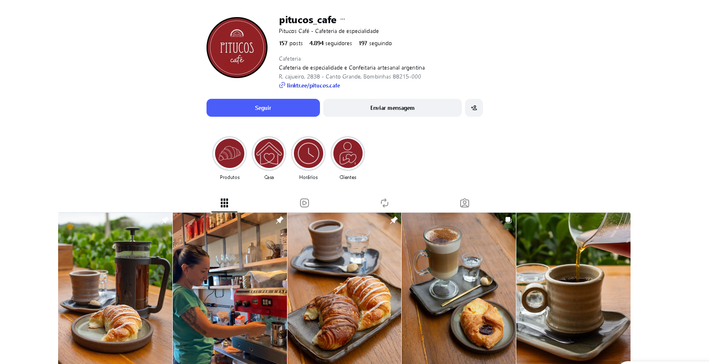
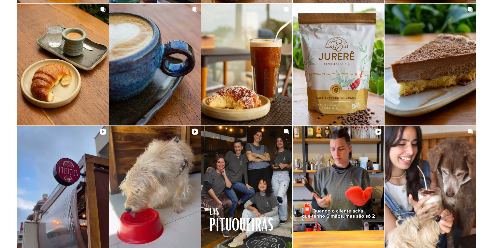

Canto Grande · Bombinhas, SCCafés especiais & medialunas argentinas
PITUCOScafé

Cafeteria de especialidade.
Confeitaria artesanal argentina.
01 / Os saboresDo café à confeitaria
Medialunas.
Café.
Pitucos.
Medialunas argentinas e cafés especiais são parte da experiência do Pitucos. No balcão, a confeitaria artesanal divide espaço com doces e empanadas.
Acesse os links do PitucosPara escolher
- Medialunas argentinas
- Espresso & cappuccino
- Latte & cold brew
- Empanadas
- Doces & confeitaria
Consulte as opções e a disponibilidade diretamente com a casa.
Fale com o Pitucos
02 / A casaPitucos,
Pitucos,
em Canto Grande.
R. Cajueiro, 2838
Bombinhas · Santa Catarina
Refeição no localRetirada na portaEntrega
“As medialunas são excelentes, latte e cold brew tônica perfeitos. As empanadas estavam mto boas também.”
03 / Sua visitaCanto Grande, Bombinhas
Encontre
o Pitucos.
Abrir rota no Maps R. Cajueiro, 2838 — Canto Grande
Bombinhas — SC
88215-000
Bombinhas — SC
88215-000
Telefone(47) 93618-0719
Instagram@pitucos_cafe
Horários de funcionamento
Confirme os horários pelo telefone ou Instagram antes de sair. Os horários podem variar.
Retirada e entrega
O Pitucos oferece retirada na porta e entrega. Consulte disponibilidade, área de atendimento e condições diretamente com a casa.